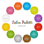

<!--The content below is only a placeholder and can be replaced.-->
<!--
<mat-toolbar [ngClass]="{'home_toolbar':href === '/'}">
  <div class="logo">
    
  </div>
</mat-toolbar>
[ngStyle]="{'background-color':herf === '/'? 'transparent':'purple'}">
  <app-toolbar ></app-toolbar>


  <app-toolbar></app-toolbar>-->

  <mat-drawer-container class="app-side-container" [ngClass]="(router.url != '/')? 'bg2': 'bg'">
      <mat-drawer #drawer class="app-sidenav" mode="side" style="background-color: #7b1fa2; color:white;" [opened]="opened" [mode]="mode" fxLayout="column" >
        <div fxLayout="row" fxLayoutAlign="start center">
          <div style="margin-top:0;"class="logo" >
            
          </div>
          <span class="panel-header-spacer"></span>
          <button mat-icon-button (click)="drawer.toggle()" style="margin-top: -35px;">
            <mat-icon>menu</mat-icon>
          </button>
        </div>

            <div>Sidenav content</div>


            <main class="side"><!-- Side Menu -->
              <mat-nav-list>
                <mat-list-item class="list-item" >
                    <mat-icon matListIcon>home</mat-icon>
                  <a matLine [routerLink]="['/']" [routerLinkActive]="['side-active']" [routerLinkActiveOptions]="{ exact: true }" (click)="drawer.toggle()">HOME</a>
                  <button mat-icon-button (click)="showInfo(link)">
                      <!----><mat-icon>info</mat-icon>
                  </button>
                </mat-list-item>

                <mat-list-item class="list-item">
                    <mat-icon matListIcon>table_chart</mat-icon>
                  <a matLine [routerLink]="['/gallery']" [routerLinkActive]="['side-active']" (click)="drawer.toggle()" >GALLERY</a>
                  <button mat-icon-button (click)="showInfo(link)">
                      <!--<mat-icon>info</mat-icon>-->
                  </button>
                </mat-list-item>
                <mat-list-item class="list-item">
                    <mat-icon matListIcon >accessibility_new</mat-icon>
                  <a matLine [routerLink]="['/about']" [routerLinkActive]="['side-active']" (click)="drawer.toggle()" >ABOUT</a>
                  <button mat-icon-button (click)="showInfo(link)">
                      <!--<mat-icon>info</mat-icon>-->
                  </button>
                </mat-list-item>
                <mat-list-item >
                    <mat-icon matListIcon>folder</mat-icon>
                  <a matLine href="...">Menu Item 3</a>
                  <button mat-icon-button (click)="showInfo(link)">
                      <!--<mat-icon>info</mat-icon>-->
                  </button>
                </mat-list-item>
                <mat-list-item >
                    <mat-icon matListIcon>folder</mat-icon>
                  <a matLine href="...">Menu Item 4</a>
                  <button mat-icon-button (click)="showInfo(link)">
                      <!--<mat-icon>info</mat-icon>-->
                  </button>
                </mat-list-item>
                <mat-list-item >
                    <mat-icon matListIcon>folder</mat-icon>
                  <a matLine href="...">Menu Item 5</a>
                  <button mat-icon-button (click)="showInfo(link)">
                      <!--<mat-icon>info</mat-icon>-->
                  </button>
                </mat-list-item>
              </mat-nav-list>
            </main>

      </mat-drawer>
      <mat-drawer-content><!-- Main Content with toolbar and side nav panel -->

        <!--<app-toolbar></app-toolbar>
        <div style="text-align:center; margin-top: 5em;">
            

        </div>
        <div style="text-align:center; margin-top: 5em;" class="">
            <a href="" [routerLink]="['/gallery']" class="enterlink">View Gallery</a>
        </div>
        -->

        <mat-toolbar class="main-toolbar mat-elevation-z2" fxLayout="row" fxLayoutAlign="start center" [ngClass]="(router.url != '/')? 'toolbar2': 'toolbar'">

          <div  [ngClass]="(router.url != '/')? 'logo': 'no-logo'">
            
          </div>
          <div [ngStyle]="{ 'display': OpenButtonDisplay}" >
              <button mat-icon-button (click)="drawer.toggle()">
                <mat-icon style="margin-top: 7px;">menu</mat-icon>
              </button>
          </div>
          <span class="toolbar-spacer"></span>
          <div [ngStyle]="{ 'display': NavDisplay}">
            <div style="font-size:.85em;">
            <a class="nav-menu" [routerLink]="['/']" [routerLinkActive]="['active']" [routerLinkActiveOptions]="{ exact: true }">home</a>
            <a class="nav-menu" [routerLink]="['/gallery']" routerLinkActive="active">gallery</a>
            <a class="nav-menu" [routerLink]="['/about']" routerLinkActive="active">about</a>
          </div>
          </div>

          <!--<mat-icon class="toolbar-icon" color="primary">account_circle</mat-icon>-->
          <button mat-button [matMenuTriggerFor]="menu"></button>
          <mat-menu #menu="matMenu" yPosition="below" xPosition="before" [overlapTrigger]="false">
              <button mat-menu-item [routerLink]="['/account/profile']">
                  <mat-icon style="color: black;">dialpad</mat-icon>
                  <span>My Account</span><br>

                </button>
                <button mat-menu-item disabled>
                  <mat-icon style="color:#d6c7c7;">voicemail</mat-icon>
                  <span>Check voicemail</span>
                </button>
                <button mat-menu-item (click)="logout()" >
                  <mat-icon style="color: black;">link_off</mat-icon>
                  <span>Logout</span>
                </button>
          </mat-menu>

          <a [routerLink]="['/account/signup']"><mat-icon class="toolbar-icon" title="sign up">list_alt</mat-icon></a>
          <a [routerLink]="['/account/login']"><mat-icon class="toolbar-icon" title="sign in">input</mat-icon></a><!--<i class="fas fa-sign-in-alt" title="login"></i></a>-->

          <!--<i class="fas fa-sign-out-alt"></i>
            <mat-icon class="toolbar-icon" title="logout">exit_to_app</mat-icon>-->
        </mat-toolbar>


        <!-- all pages are hosted here -->
        <router-outlet></router-outlet>

      </mat-drawer-content>
  </mat-drawer-container>

<!-- <router-outlet></router-outlet>-->


